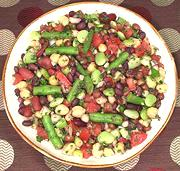

|
Seven Bean SaladGeneral and United States | ||||
| Makes: Effort: Sched: DoAhead: |
1 gallon ** 5 hrs Must |
A party dish, this delicious bean salad recipe makes a whole gallon. It's that big to allow using whole cans of beans with none left over. Of course soaking the beans from dry (see Note-1) you could make it any size. | |||
|
|
12 1-1/2 ------- 1-1/4 1/2 6 1/2 2 1-1/2 1 1 1/2 1 ------- 1 15oz 1 15oz 1 15oz 1 15oz 1 15oz |
oz c ---- # # oz c t T t T c c ---- can can can can can |
Green Beans Lima Bean, frozen -- Dressing Tomatoes ripe Celery Onion Parsley, flat Rosemary Sage, fresh Peppercorns, black Salt Olive Oil ExtV Vinegar, Red Wine -------- Kidney Beans, red White Beans Garbanzo Beans Black Beans Pigeon Peas |
Make - (5 hrs - 30 min work)
|